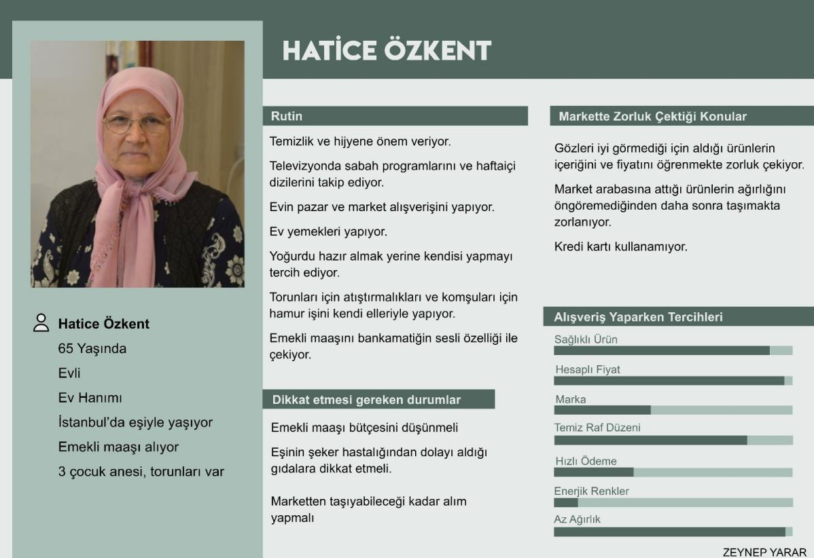

+++
title = "Tasarım Sözlüğü: Persona"
description=""
url="sayi-7/tasarimda-persona-nedir"
aciklama="Personalar tasarım problemlerinin tanımlanması ve problemlere çözüm tasarlayabilmek amacı ile - sorunu yaşayan kullanıcıların bulguları ışığında- ideal müşteri tipinin kurgusal karakteridir."
type="sayfa"
thumb="/img/persona-nedir-thumbnail.png"
date = "2021-03-02"
sayi=["07"]
sayfa="05"
yazar=["goksu gokturk"]
tags= ["ana sayfa", "dergi", "tasarim sozlugu"]
+++

<div class="container">
        <div class="row">
        <div class="col-md-6"><h2><strong>Persona Nedir?</strong></h2>
<p>Persona, Latince kökenli olup &quot;karakter&quot; anlamına gelmektedir.</p>
<p>
   Personalar tasarım problemlerinin tanımlanması ve problemlere çözüm
   tasarlayabilmek amacı ile - sorunu yaşayan kullanıcıların bulguları ışığında-
   ideal müşteri tipinin kurgusal karakteridir.
</p>
<blockquote>
   <p>
      Birçok makale, personayı, hedef kullanıcıların belirli, somut bir temsili
      olan kurgusal karakterler olarak açıklamıştır. (Pruitt, Adlin, 2006)
   </p>
</blockquote>
<blockquote>
   <p>
      &quot;İlgi çekici bakış açısı, hikayelerin katılım ve iç görü üretme
      yeteneğine dayanmaktadır. Karakterlerin ve hikayelerin anlaşılmasıyla,
      hayali insanların canlı ve gerçekçi bir tanımını oluşturmak
      mümkündür. İlgi çekici bakış açısının amacı, kullanıcıyı
      tanımlayamadıkları ve hayatını öngöremedikleri bir klişe olarak gören
      tasarımcılardan, kendilerini aktif olarak personaların yaşamlarına dahil
      eden tasarımcılara geçmektir. Diğer persona bakış açıları, bütün kişiye
      bakmayarak bunun yerine sadece davranışa odaklanarak basmakalıp
      tanımlamalar riskine neden olduğu için eleştirilir. &quot; -Lene Nielsen
   </p>
</blockquote></div>
        <div class="col-md-6"><h2>Persona Neden Önemlidir?</h2>
<p>
   Tasarım sürecinde sorunu çözerken bu sorunu <em>niye</em> ve
   <em>kime</em> yapıldığını bilerek kullanıcı ile maksimum empati kurulur;
   sorunu detaylandırarak soruna doğru çözümün tasarlanabilmesine yardımcı olan
   bir araçtır. Empati buradaki önemli bir husustur. Kullanıcının bir günlük
   yaşamındaki alışkanlıklar, istekleri, ihtiyaçlar ve yaşadığı sorunlar
   <em>anlaşılır</em>. Kullanıcının istedikleri sonuçları elde etmelerine
   yardımcı olacak çözümler oluşturulur, bunlara göre ürünler veya hizmetler
   geliştirilir.
</p>
<p>
   {{}}
</p></div>
    </div>

    <div class="row">
        <div class="col-md-4"><p>
   Personalar üzerinde çalışılan soruna göre farklı kriterler ile oluşturulur.
   Ancak başlıca dikkat edilmesi gereken kriterler bunlardır:
</p>
<ul>
   <li>
      <strong>Demografik özellikleri</strong>: Kullanıcı personasının adı, yaşı,
      yaşadığı yer, sosyo-ekonomik sınıfı, eğitim düzeyi ve mesleği.
   </li>
   <li>
      <strong>Teknolojik faaliyetleri:</strong> Bilgisayar, internet ve TV
      kullanımı
   </li>
   <li>
      <strong>İlgi alanları ve değerleri:</strong> Neler yapmaktan hoşlandığı,
      değerleri.
   </li>
   <li><strong>Motivasyon</strong>: Ulaşmak istediği hedefleri, içgüdüleri.</li>
   <li>
      <strong>Engel ve kısıtlar</strong>: Amacına ulaşmasını engelleyen iç ve
      dış etkenler.
   </li>
   <li>
      <strong>Yaklaşım</strong>: Kullanıcının amacına ulaşması için engelleri
      ortadan kaldırılmasında nasıl bir yaklaşım izlenileceğidir.
   </li>
   <li>
      <strong>Normal bir günü:</strong> Bir gün içerisindeki rutin ve
      alışkanlıkları.
   </li>
</ul></div>
        <div class="col-md-4"><p>
   {{}}
</p>
<p>
   {{}}
</p></div>
        <div class="col-md-4"><h2>Persona Oluşturma Adımları</h2>
<ol start="1">
   <li>
      Kimliğini Oluşturmak: Personaya bir görünüş- fotoğraf-, isim verilir.
      Kullanıcının tanımlanması kolaylaşır.
   </li>
   <li>
      Profilini Belirlemek: Firma ise daha önce müşterisi olmuş ya da henüz
      olmamış ancak etkileşimde bulunmuş kişilerin cinsiyet, yaş medeni durum,
      gelir durumu, alışkanlıkları gibi özelliklerini belirlemek, eğer mümkünse
      benzer özellikteki kişilere sosyal ağlar aracılığı ulaşılmalıdır.
   </li>
   <li>
      Amacını Belirlemek: İlgi alanları, satın aldıkları ürün veya hizmetten
      beklentileri gibi bilgiler tespit edilmelidir.
   </li>
   <li>
      Yaşadıkları Sorunları Bulmak: Kullanıcı personasında yaşanan deneyim
      incelenerek yaşadıkları sıkıntılar, şikayetçi oldukları konular
      belirlenir.
   </li>
   <li>
      Sorunları Çözümlemek: Kullanıcının sorunlarına yaklaşımı, sorunların onlar
      tarafından nasıl kaldırılmasının yararlı olacağı çözümlenir ve
      değerlendirilir. İdeal çözüm olan ürün veya hizmet personayı hedef alacak
      şekilde tasarlanır.
   </li>
</ol></div>
    </div>

<h3>Persona Örneği</h3>
    <div class="row">
        <div class="col-md-6"><p><strong>Sorun:</strong> Market alışverişi sırasında yaşanan zorluklar</p>
<p>
   • Alışveriş sırasında yaşanan sorunlar için 3 adet persona oluşturulmuş ve
   çözüm bu personaların ışığında geliştirilmiştir.
</p><p>
   {{}}
</p><small class="text-muted">Personalar: Zeynep Yarar</small></div>
        <div class="col-md-6"><p>
   {{}}
</p>
<p>
   {{}}
</p></div>
    </div>


<p class="text-center mt-5">Persona konusunu daha detaylı incelemek isterseniz:</p>
<p>
        <div class="row">
        <div class="col-md-6 offset-md-3 "><iframe width="100%" height="315" src="https://www.youtube.com/embed/XnG4c4gXaQY" frameborder="0" allow="accelerometer; autoplay; clipboard-write; encrypted-media; gyroscope; picture-in-picture" allowfullscreen></iframe>
</div>
    </div>
    </p>

    <button
    class="btn markutbtn"
    data-target="#my-collapse"
    data-toggle="collapse"
    aria-expanded="false"
    aria-controls="my-collapse"
    >
    Kaynaklar
    </button>
    <div id="my-collapse" class="collapse">
    <pre> <small><code>  
        https://uxdesign.cc/while-we-are-talking-about-personas-what-exactly-are-we-talking-525a645eb61a

        https://www.interaction-design.org/literature/topics/personas
        
        https://www.interaction-design.org/literature/article/personas-why-and-how-you-should-use-them
        
        https://www.dijitalajanslar.com/persona-nedir-nasil-yaratilir/
        
        https://www.edvido.com/blog/dijital-pazarlama/persona-nedir-nasil-olusturulur
        
        https://www.ipara.com.tr/blog/persona-nedir-nasil-olusturulur
        
        https://medium.com/@ajansara.com/persona-nedir-nasıl-oluşturulur-e06b482dc021
        
        https://careerfoundry.com/en/blog/ux-design/what-is-a-persona/
        
        https://www.cancankiran.com/persona-nedir-nasil-olusturulur/
        
        https://sherpa.blog/sozluk/persona-nedir        
      </code></small></pre>
    </div>
</div>